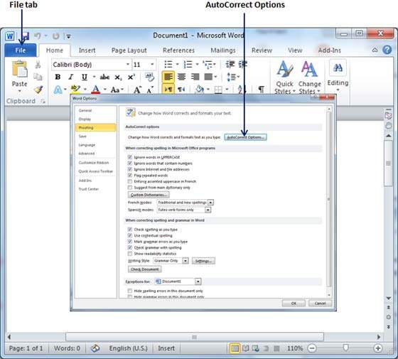
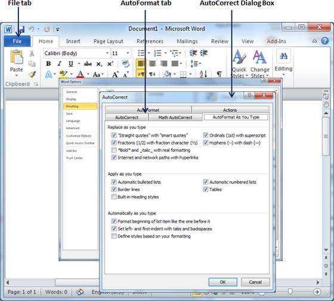

The following steps will help you set the AutoFormat feature in your Microsoft Word.
Step 1 − Click the File tab, click Options, and then click the Proofing option available in the left most column, it will display the Word Options dialog box.

Step 2 − Click the AutoCrrect Options button; this will display the AutoCorrect dialog box and then click the AutoFormat As You Type tab to determine what items Word will automatically format for you as you type.

Step 3 − Select from among the following options, depending on your preferences.
| S.No | Option and Description |
|---|---|
| 1 |
"Straight quotes" with “smart quotes” This option will be used to replace the plain quotation characters with curly quotation characters. |
| 2 |
Fractions (1/2) with fraction character (½) This option will be used to replace the fractions typed with numbers and slashes with fraction characters. |
| 3 |
*Bold* and _italic_ with real formatting This option will be used to format text enclosed within asterisks (*) as bold and text enclosed within underscores ( _ ) as italic. |
| 4 |
Internet and network paths with hyperlinks This option will be used to format e-mail addresses and URLs as clickable hyperlink fields. |
| 5 |
Ordinals (1st) with superscript This option will be used to format ordinal numbers with a superscript like 1st becomes 1st. |
| 6 |
Hyphens (--) with dash (—) This option will be used to replace a single hyphen with an en dash (.) and two hyphens with an em dash (—). |
| 7 |
Automatic bulleted lists This option will be used to apply bulleted list formatting to paragraphs beginning with *, o, or - followed by a space or tab character. |
| 8 |
Automatic numbered lists This option will be used to apply numbered list formatting to paragraphs beginning with a number or letter followed by a space or a tab character. |
| 9 |
Border lines This option will be used to apply paragraph border styles when you type three or more hyphens, underscores, or equal signs (=). |
| 10 |
Tables This option will be used to create a table when you type a series of hyphens with plus signs to indicate the column edges. Try with +-----+------+ ) and then press Enter. |
| 11 |
Built-in heading styles This option will be used to apply heading styles to heading text. |
| 12 |
Format beginning of list item like the one before it This option will be used to replace plain quotation characters with curly quotation characters. |
| 13 |
Set left- and first-indent with tabs and backspaces This option sets left indentation on the tab ruler based on the tabs and backspaces you type. |
| 14 |
Define styles based on your formatting This option automatically creates or modifies styles based on manual formatting that you apply to your document. |
Step 4 − Finally click OK to close the AutoCorrect Options dialog box and again click OK to close the Word Options dialog box.